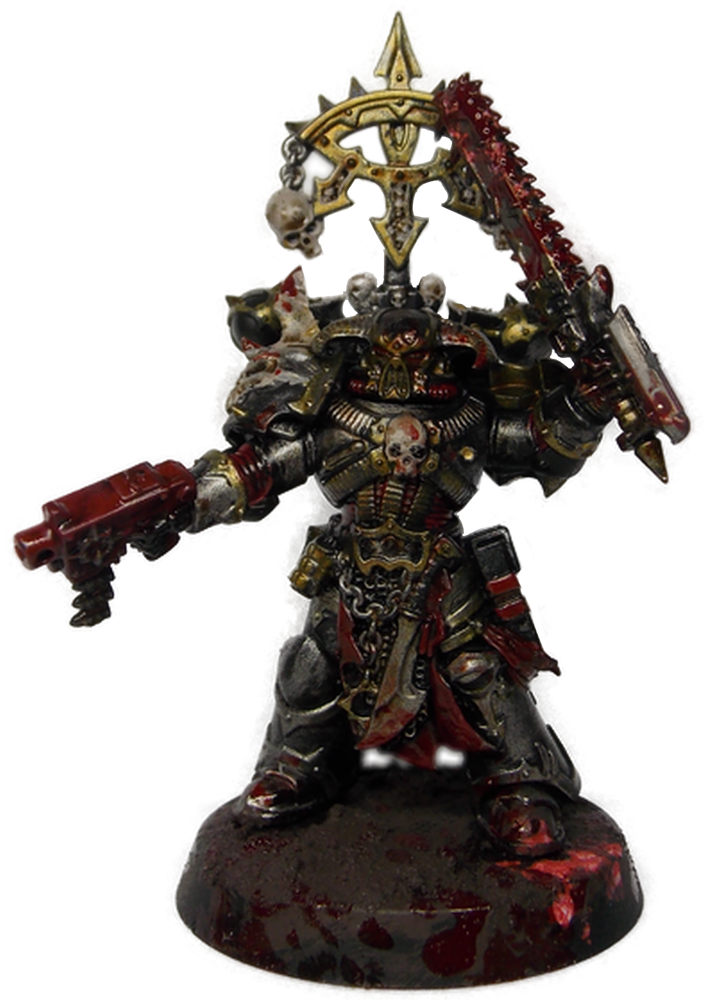
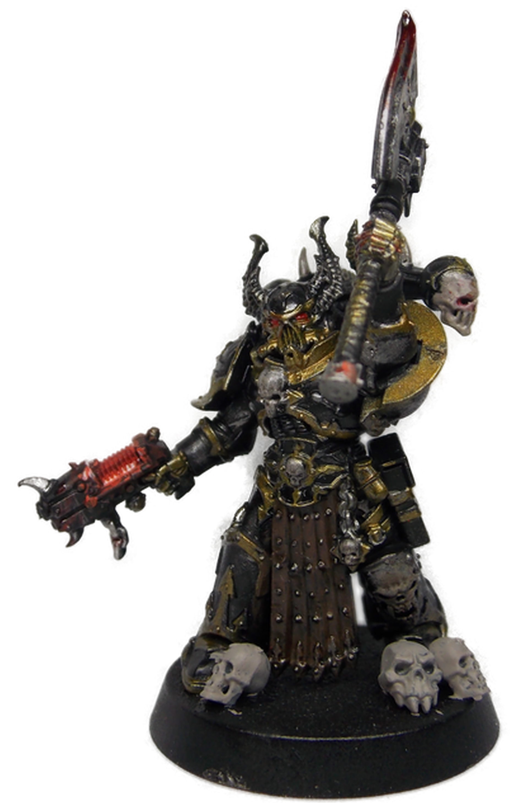

> CLICK TO RETURN HOME <
Warhammer... & some Trench Crusade to come. :) I was a kickstarter backer, so I'm waiting on the book and I picked the
Court of the Seven Headed Serpent
 as my warband!
as my warband!
As for Warhammer; I prefer Chaos Space Marines for 40k and Slaves to Darkness for AoS/Fantasy- Slaves to Darkness being the book I took these page graphics from.
Currently I'm looking to finish up the Chaos Space Marines, and then I'll be starting on the two (!!!) Slaves to Darkness kits my awesome boyfriend got for me. :P

